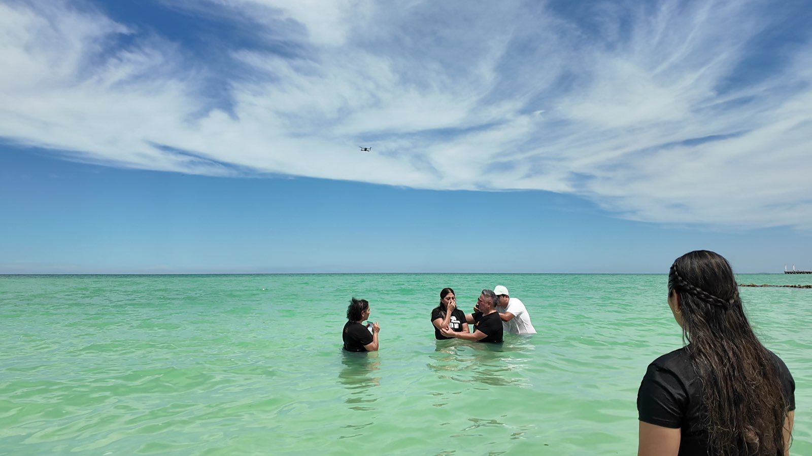
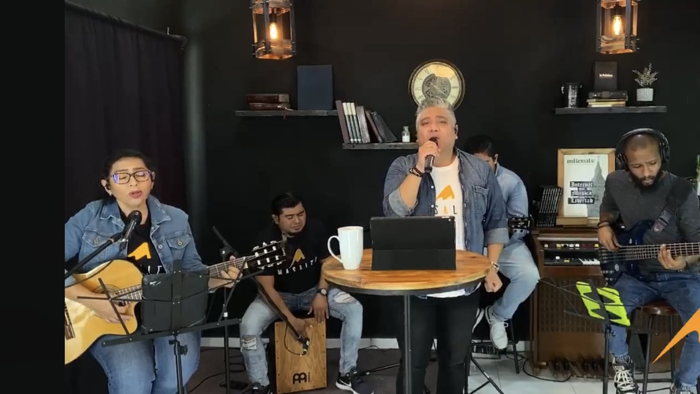
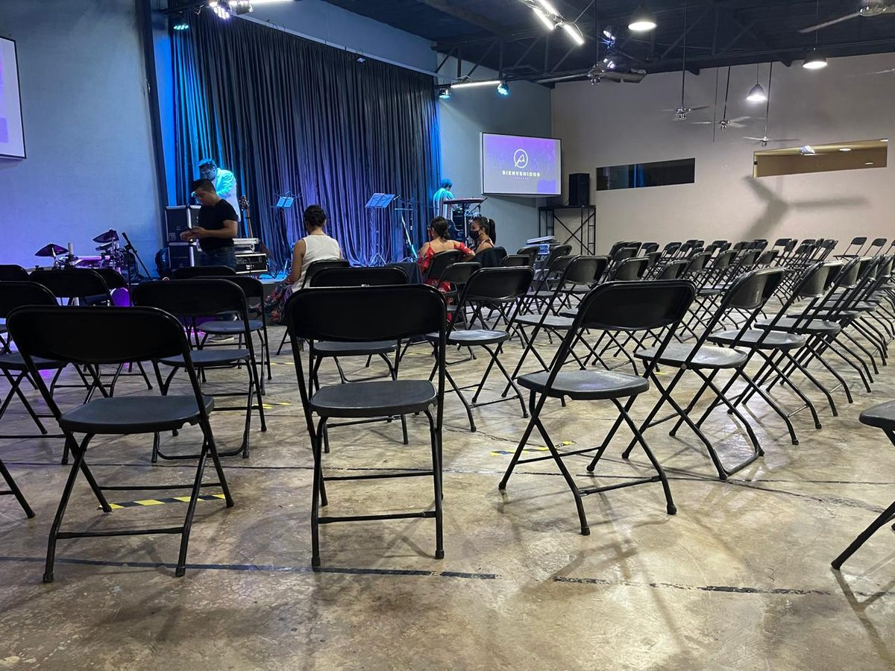
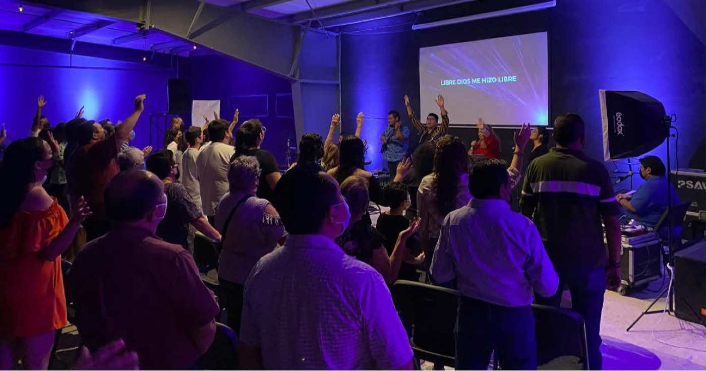
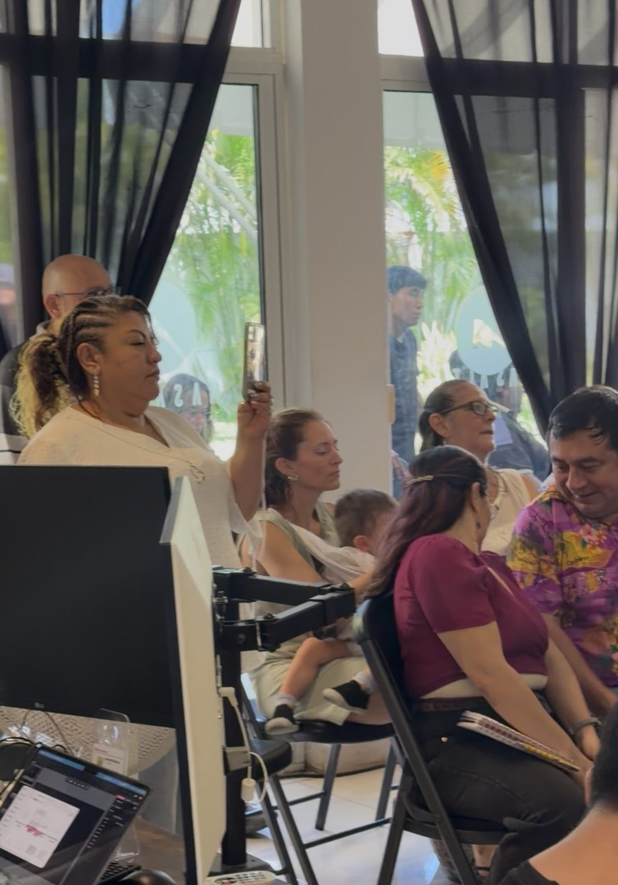

Comunidad Más Alto · La levantamos juntos
La Nave
Durante años crecimos en lugares prestados. La Nave es el primero que es nuestro — para nuestras familias, y para el lugar donde estamos con Dios.
150 de 250 ladrillos
cierre firme 31 de julio
Lo que de verdad estamos levantando
No es un edificio.
Es el corazón de la comunidad.
- Donde tu familia encuentra su lugar.
- Donde tus hijos crecen y tus padres tienen dónde llegar.
- Donde estamos con Dios — y Él nos habla, y nos guía.
El corazón de La Nave somos nosotros.Ahora va a latir en un lugar que es nuestro.
La travesía: así se levanta La Nave
Por años vivimos en lo prestado y lo rentado.Fe real, comunidad real — en lugares que nunca fueron nuestros.
Eso cambia ahora.Una estructura de 18 × 18 metros se levanta — la primera que es nuestra.
Cerrada y climatizada.Pensada para nuestra gente, por los próximos 10 a 15 años.
No es una carpa. No son metros cuadrados.Es donde crecen nuestros hijos — y donde estamos con Dios.
Por qué La Nave
Ya no cabemos.
Durante años nunca tuvimos un lugar propio — siempre prestado o rentado, siempre de alguien más. Y aun así no dejamos de crecer: hoy son dos cultos cada domingo, a las 10 y a las 12, y seguimos quedándonos cortos. La Nave es el primer lugar hecho para nosotros — para nuestras familias, para nuestros hijos y nuestros padres, y para el lugar donde nos encontramos con Dios.
De dónde venimos
-
01

La sala de una casa
Rentada y pintada de negro — transmitíamos desde la sala.
-
02

Frente al boliche
Un salón rentado, frente a la bolera.
-
03

Arriba del boliche
Después, arriba de la misma bolera rentada.
-
04

Hoy
Dos cultos cada domingo — y ya no cabemos.
El espacio propio
- 324 m² Superficie climatizada
- 18 × 18 Metros de estructura
- 10–15 Años por delante
La visión
En voz de quienes la sueñan.
El Pastor Joel y Rodrigo Cedeño cuentan qué es La Nave, por qué ahora, y qué cambia para nuestros hijos.
El avance, en vivo
El Muro de los 250.
Cada celda es un ladrillo. Juntas dibujan la fachada de La Nave — y se encienden de abajo hacia arriba, como se levanta un muro de verdad. La puerta queda abierta: por ahí vamos a entrar todos.
El muro se enciende con cada ladrillo tomado.
- —
- Tomados
- —
- Disponibles
- —
- Días
- —
- Ritmo / día
La comunidad
Esto es lo que ya somos.
El corazón que va a latir en La Nave ya late aquí — en cada rostro, cada domingo, cada bautizo. Esto no lo construimos; ya existe. Solo le estamos dando un lugar.
Quiénes la sueñan
Detrás de La Nave, una familia que la pastorea.
-
Pastor Joel
Pastor fundador
-

Pastora Ana
Pastora fundadora
Con un equipo de proyecto dedicado y un consejo técnico de arquitectos e ingenieros que respalda cada criterio de la obra.
La causa de todos
No es dar. Es pertenecer.
Cada ladrillo que se toma acerca el día en que La Nave sea nuestra. Aquí nadie pone de más ni de menos — cada quien pone su parte, y entre todos la levantamos. En diez años, alguien se va a encontrar con Dios aquí por primera vez, y este lugar estará de pie porque hoy también fue tuyo.
-
Familia
La Nave se levanta entre todos, no sobre los hombros de unos pocos.
-
Con Dios
Un lugar nuestro para encontrarnos con Dios — y para que Él nos guíe como comunidad.
-
Legado
Tu ladrillo deja un nombre — el tuyo — para los que aún no llegan.
Cómo tomar tu lugar
Tres pasos. Sin complicaciones.
-
Decide cuántos ladrillos
Uno, dos, tres — los que puedas. Cada ladrillo cuenta y acerca el cierre.
-
Regístrate
Deja tu nombre entre quienes la levantan. Toma menos de un minuto.
-
El equipo te acompaña
Un miembro del equipo te contacta para completar los detalles, a tu ritmo.
Regístrate en los dos cultos dominicales o con tu líder de grupo — el equipo te acompaña con los detalles.
masalto.org/lanave
Preguntas
Lo que la comunidad pregunta.
¿Qué es un “ladrillo”?
Es tu parte en La Nave y tu nombre entre quienes la levantaron. Cada ladrillo cuesta $3,850. Puedes tomar uno o varios.
¿Hasta cuándo puedo participar?
La causa cierra el 31 de julio de 2026 y no se reabre. No es una fecha para presionar: los eventos de agosto ya están en calendario y La Nave debe estar lista. Es la fecha en que empieza lo que sigue.
¿Puedo tomar mi ladrillo en parcialidades?
Sí. Puedes completarlo en una sola exhibición o en partes. El equipo te acompaña con los detalles.
¿Cómo se realiza mi aportación?
De forma directa y personal con el equipo: transferencia o efectivo, en una exhibición o en parcialidades. Al registrarte, un miembro del equipo te contacta y te acompaña paso a paso.
¿Quién está detrás de La Nave?
Comunidad Más Alto: sus pastores fundadores, un equipo de proyecto dedicado y un consejo técnico de arquitectos e ingenieros que respalda los criterios de la estructura.
¿Para qué se usa La Nave?
Para los cultos, eventos y la vida de la comunidad — un espacio propio para los próximos 10 a 15 años.
La Nave en movimiento
No es una carpa.
Es donde crecemos.
Encuéntranos
Aquí late la comunidad.
Comunidad Más Alto · Iglesia cristiana
Calle 10 entre 1 y 1A, Montecarlo, Vista Alegre Nte, 97130 Mérida, Yuc.